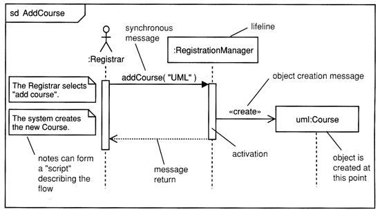
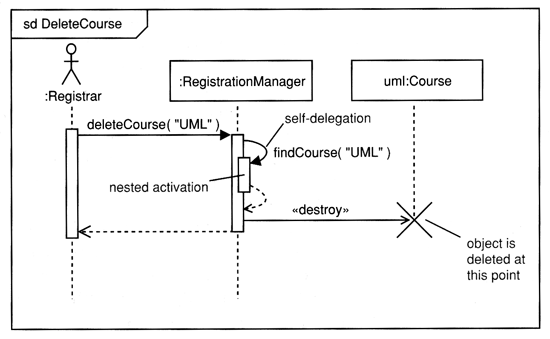

Software Engineering
Interaction DiagramsAgenda
Course Map

Interaction Diagrams
- Class and object diagrams are static model views.
- Interaction - a unit of behavior of a context classifier
- In use case realization a context classifier is a use case.
- You create one or more interactions to demonstrate how behavior
specified by the use case can be realized by instances of classifiers
passing messages back and forth.
- Interaction diagrams are dynamic.
- They describe how participants
collaborate.
- Four types: sequence, communication, interaction
overview diagrams, timing diagrams
Lifelines
- A lifeline represents a single participant in an interaction.
- You can think of a lifeline as representing how an instance of a
classifier may participate in the interaction.
- However, it does not represent any particular instance of the
classifier.
- Name - used to refer to the lifeline within the interaction
- Type - the name of the classifier of which the lifeline represents an
instance
- Selector - a Boolean condition that may be used to select a single
instance that satisfies the condition
Messages
- In analysis, you are not concerned with the detailed semantics of
message sending, merely with the fact that a message is sent. As such you
can show all messages as synchronous because this is the most constraint
case.
- In design, it can be important to distinguish between those
messages so you can design concurrent flow of control.
Sequence diagrams show interactions between lifelines as a
time-ordered sequence of events.
A sequence diagram
is an interaction diagram that details how operations are carried out --
what messages are sent and when. Sequence diagrams are organized
according to time. The time progresses as you go down the page. The
participants (lifelines) involved in the operation are listed from left to right
according to when they take part in the message sequence.
Below is a sequence diagram for adding a course. The
lifeline initiating the sequence of messages is :Registrar

The :Registrar sends a
addCourse("UML) message to a :RegistrationManager. The
:RegistrationManager then sends a create()
message to the Course class.
- Each vertical dotted line (tail) represents the time that a lifeline exists.
- Each
arrow is a message call. An arrow goes from the sender to the top of the
activation of the message on the receiver's lifeline.
Activations indicate when lifeline has focus of control.
- The
activation bar represents the duration of execution of the message.

In the diagram Delete Course, the :RegistrationManager issues a
self call to determine if a course is available. If so, then
the :RegistrationManager destroys a uml:Course.
Combined Fragments and Operators
- Combined fragments divide a sequence diagram into different areas with
different behavior.
- Each combined fragment has an operator, one or more operands,
and zero or more guard condition.
- The operator determines how its operands execute.
- Guard conditions determine whether their operands execute.
Branching with opt and alt
opt: creates a single branch
if (condition) then
op1()
alt: creates multiple branches
if (condition1) then
op2()
else if (condition2) then
op3()
else
op4()
Iteration with loop and break
- loop allows you to model iteration.
- When the break guard condition evaluates to true, the break
operand executes, and the loop terminates,
Communication
diagrams are also interaction diagrams. They convey the
similar
information as sequence diagrams, but they focus on participant roles instead
of the times that messages are sent. In a sequence diagram, participant roles
are the vertices and messages are the connecting links.
The participant -role rectangles are labeled with either class or object
names (or both). Class names are preceded by colons ( : ).
Each message in a collaboration diagram has a
sequence number. The top-level message is numbered 1.
Messages at the same level (sent during the same call) have the same
decimal prefix but suffixes of 1, 2, etc. according to when they occur.